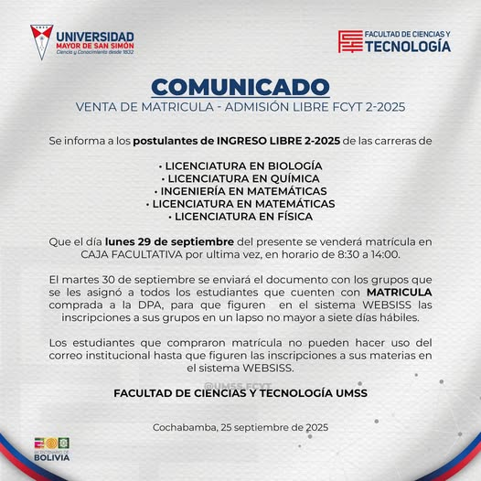

<!--Para el html use conocimientos que yo ya tenia al igual que para los links y las palabras use referencias de 
ejercicios que ya tenia las imagenes de comunicados los saque de https://www.facebook.com/profile.php?id=100063768747099 en cuanto 
al logo del memi lo saque del documento ya mandado y en cuanto al logo de la facultad lo saque de git GitHub – umss/logos-->>
<!DOCTYPE html>
<html lang="es">
<head>
  <meta charset="UTF-8" />
  <meta name="viewport" content="width=device-width, initial-scale=1.0" />
  <title>Centro Memi</title>
  <link rel="stylesheet" href="css/disenio.css" />
</head>
<body>
  <header>
    <h1>Centro Memi</h1>
    <nav class="barra" aria-label="Menú principal">
      
      <button class="menu-toggle" aria-expanded="false" aria-controls="main-menu">☰</button>
      <ul id="main-menu" class="menu">
        <li><a href="#">Misión Visión Valores</a></li>
        <li>
          <a href="#">Acerca de</a>
          <ul class="submenu">
            <li><a href="#">Antecedentes</a></li>
            <li><a href="#">Datos históricos</a></li>
            <li><a href="#">Autoridades</a></li>
          </ul>
        </li>
        <li><a href="#">Cursos / Seminarios</a></li>
        <li><a href="#">Publicaciones</a></li>
        <li><a href="#">Servicios</a></li>
        <li><a href="#">ICPC UMSS</a></li>
        <li><a href="#">Contacto</a></li>
      </ul>
      
    </nav>
  </header>

  <main>
    <section class="ruleta" aria-label="Avisos">
      <h2>Avisos</h2>
      <div class="ruleta-track">
        <ul>
          <li></li>
          <li></li>
          <li></li>
          <li></li>
        </ul>
      </div>
    </section>

    <section class="links-utiles">
      <a href="https://www.facebook.com/fcyt.umss.edu">facebook</a><br>
      <a href="http://www.fcyt.umss.edu.bo/">Web FCyT</a><br>
      <a href="mailto:webmaster@fcyt.umss.edu.bo">correo electrónico</a>
    </section>
  </main>
</body>
</html>
